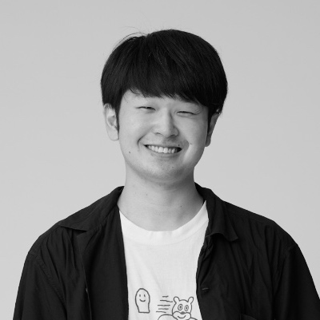
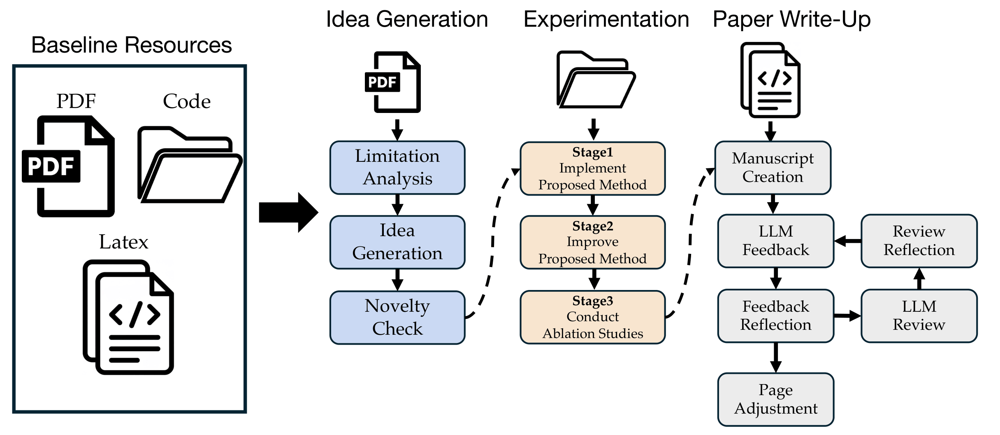
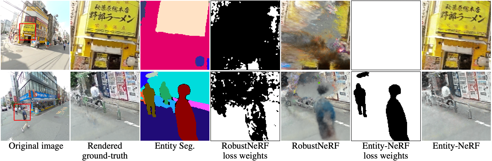
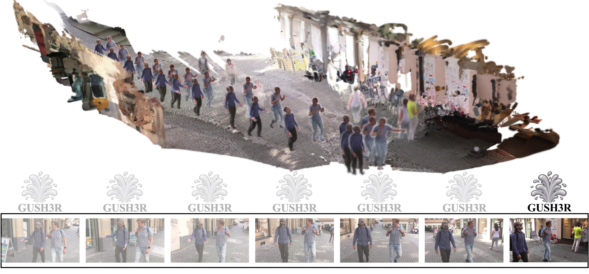
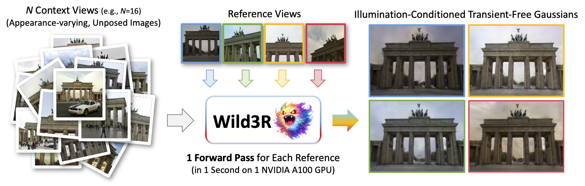

FillGS: Filling Observation Gaps in 4D Gaussian Splatting via Viewpoint-Time Selection and Generative Refinement.

I am currently a second-year PhD student at Yamasaki Lab, the University of Tokyo, specializing in computer vision and graphics. My interests lie in the application of novel view synthesis techniques, such as NeRF and 3D Gaussian Splatting, particularly in the context of creating 3D content in the real world.

GUSH3R was posted on arXiv.
FillGS was accepted to ECCV 2026.
Wild3R was posted on arXiv.
Jr. AI Scientist and Its Risk Report was accepted by TMLR.
I was selected for JST ACT-X.
The University of Tokyo
Ph.D. in Graduate School of Information Science and Technology
Supervisor: Prof. Toshihiko Yamasaki
The University of Tokyo
M.S. in Graduate School of Information Science and Technology
Supervisor: Prof. Kiyoharu Aizawa
The University of Tokyo
B.S. in Under Graduate School of Engineering
Information and Communication Engineering
Supervisor: Prof. Kiyoharu Aizawa
CyberAgent, Inc.
Machine learning engineer (full-time)





4D新規視点画像合成のための生成モデルの視点選択と生成画像のフィルタリング
第29回画像の認識・理解シンポジウム (MIRU), 2026
A Large-scale Dataset for 3D Reconstruction from Unconstrained Image Collections
第29回画像の認識・理解シンポジウム (MIRU), 2026
Feed-Forward Gaussian Splatting による人物中心の 4Dシーン再構成
第29回画像の認識・理解シンポジウム (MIRU), 2026
統一的なGaussian SplattingによるFeed-Forward型の人間中心4Dシーン再構成
空間メディアコンファレンス, 2026 Young Researcher Award
多様な照明環境下で撮影されたシーンにおける Feed-Forward 3D Gaussian Splatting
電子情報通信学会 画像工学研究会 (IE), 2026
Feed-Forward Gaussian Splattingによる Human-Centric 4Dシーン再構成
電子情報通信学会 画像工学研究会 (IE), 2026 IE賞
画像生成モデルとフィルタリングによる画像のみからの都市空間自由視点画像合成
第28回画像の認識・理解シンポジウム (MIRU), 2025
都市シーンにおける動く物体を除去した静的なNeRF表現の学習
映像情報メディア学会 メディア工学研究会 (ITE-ME), 2024 映像情報メディア学会 優秀研究発表賞
Neural Radiance Fields による人や車を除いた自由視点映像合成
第28回バーチャルリアリティ学会大会 (VRSJ), 2023
セグメンテーションマスクを利用した動画からの静的なNeRF表現の学習
第26回画像の認識・理解シンポジウム (MIRU), 2023
セグメンテーションマスクを利用した動画からの静的なNeRF表現の学習
電子情報通信学会 パターン認識・メディア理解研究会 (PRMU), 2023 PRMU研究会 月間ベストプレゼンテーション賞
NeRFを用いた360度画像の任意視点画像合成
第50回画像電子学会年次大会 (IIEEJ), 2022
360度画像のNeRFのための光線サンプリング戦略
第25回画像の認識・理解シンポジウム (MIRU), 2022
360度画像に対するNeRFによる新規視点画像合成
情報処理学会第84回全国大会 (IPSJ), 2022
科学技術振興機構 戦略的創造研究推進事業 ACT-X
Strategic Basic Research Programs ACT-X, Japan Science and Technology Agency (JST)
映像情報メディア学会 優秀研究発表賞
Best Presentation Award, The Institute of Electronics, Information and Communication Engineers
Invited Talk for Entity-NeRF (CVPR2024) @ FIT 2024 トップコンファレンスセッション
2023年度 東京大学大学院 情報理工学系研究科 電子情報学専攻 専攻長賞
Head of Department's Award for Master's Thesis, The University of Tokyo
PRMU月間ベストプレゼンテーション賞
Best Presentation Award, The Institute of Electronics, Information and Communication Engineers
2021年度 東京大学 工学部 電子情報工学科・電気電子工学科 優秀卒業論文賞
Best Bachelor Thesis Award from the Department of Information and Communication Engineering and Department of Electrical and Electronic Engineering
2021年度 東京大学 工学部 工学部長賞 (学修)
Dean's Award for Academic Excellence from the Faculty of Engineering
統計検定1級 統計応用 (理工学) 成績優秀賞
Award for Excellence, Japan Statistical Society Certificate Grade 1